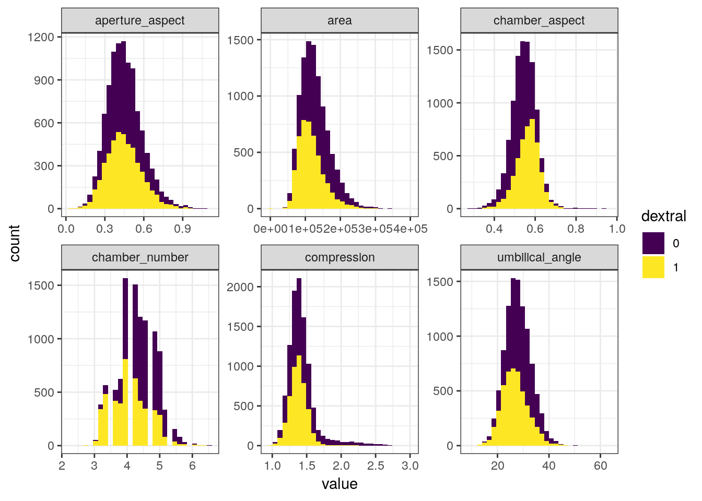
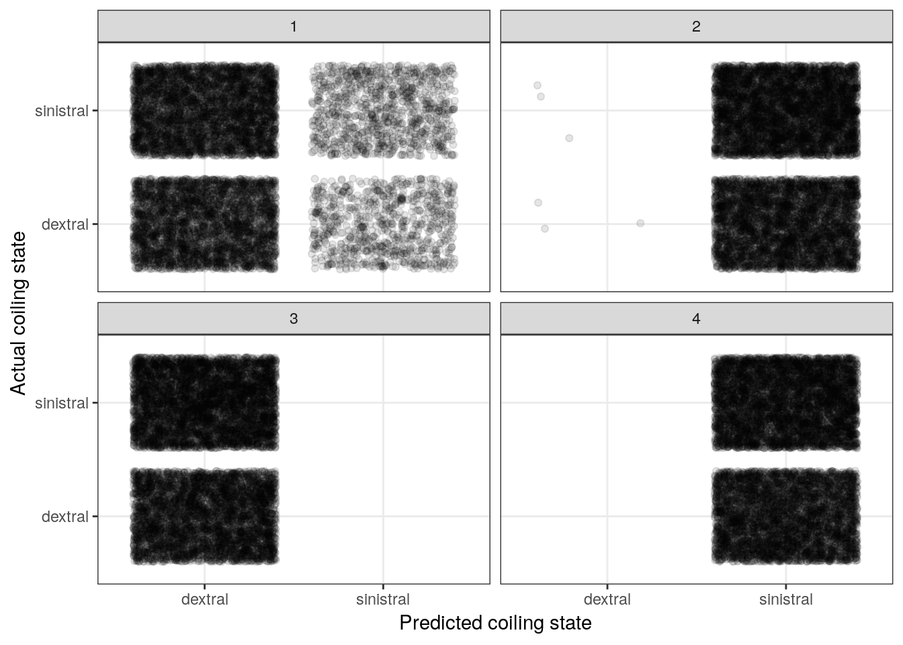
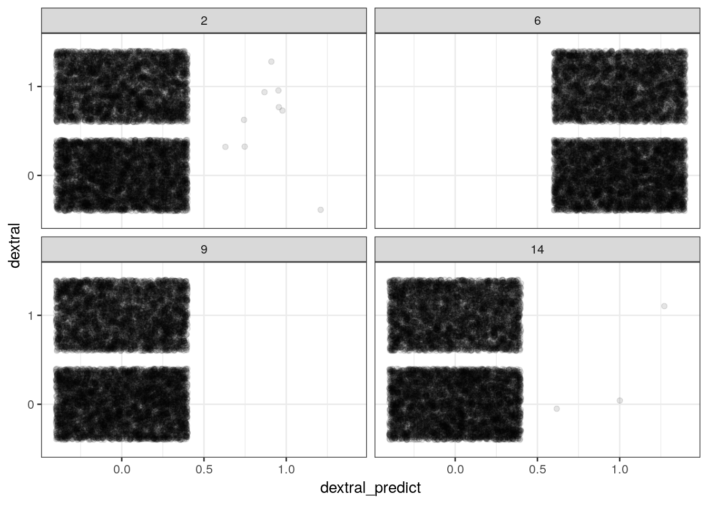
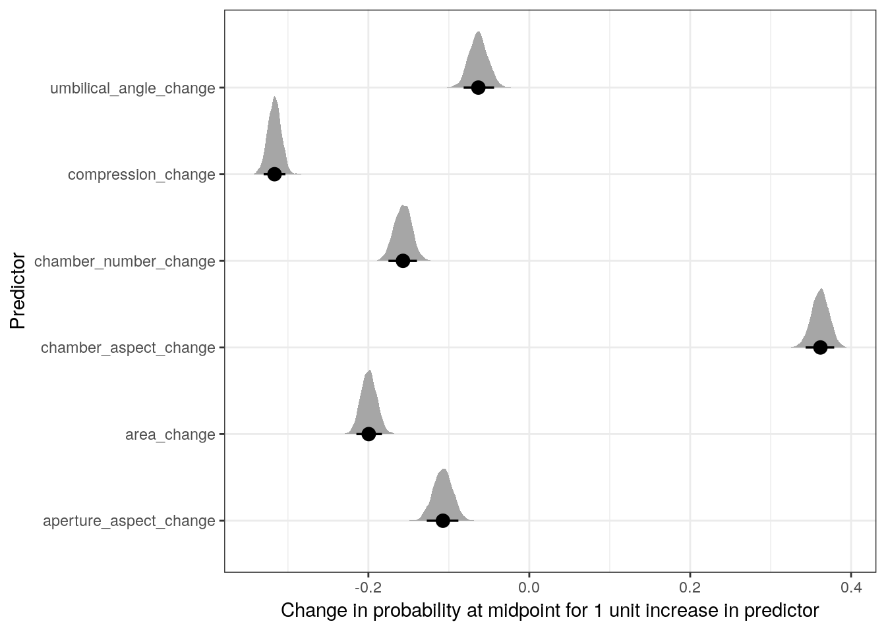

7 Logistic regression
7.1 Objectives
- Introduce logistic regression
- Interpret regression coefficients from logistic regression
- Assess model adequacy
library(pacman)
p_load(tidyverse, here, janitor, purrr, viridis, brms, tidybayes, bayesplot,
readxl, arm, modelr)
theme_set(theme_bw())7.2 Reading
The following materials are recommended pre-readings before starting this tutorial.
- Chapter 5 “Logistic regression” from Data Analysis Using Regression and Multilevel/Hierarchical Models by Gelman and Hill.
- Chapter 10 “Counting and Classification” from Statistical Rethinking by Richard McElreath.
- OPTIONAL Chapter 9 “Big Entropy and the Generalized Linear Model” from Statistical Rethinking by Richard McElreath.
A lot of the material and advice for interpreting logistic regression coefficients, both as probabilities and odds, is based on Chapter 5 of Gelman and Hill.
7.3 Introduction
Not all response variables we might be interested in are continuous variables between \(-\infty\) and \(\infty\). In some cases our variable of interest might be binary (0/1). For example, we might be interested in if a snail shell coils to the left or right, or if a species survives from one time to the next. The globe tossing exercise from an earlier lesson is an example of this type of data. But instead of asking for the probability of an outcome, we’ll now lean how to incorporate predictor variables into that type of model.
Logistic regression is the standard way to model a binary response variable. We will be modeling the response variable, \(y\), as following a Bernoulli distribution. The Bernoulli distribution has a single parameter, \(\theta\), which is the probability of a “positive” outcome i.e. a 1 and not a 0. The Bernoulli distribution is related to the Binomial distribution introduced with the globe tossing exercise, but describes the probability of individual events as opposed to the probability of those “positive” events in aggregate.
Just because the type of the response variable has changed doesn’t mean we have to completely reinvent the wheel. While we aren’t going to use the Gaussian distribution to model our outcome like in linear regression, we’re still going to use an additive series of covariates multiplied by regression coefficients. But we have one huge complication: the Bernoulli distribution’s only parameter \(\theta\) is defined from 0 to 1 while a linear model \(X \beta\) is defined from \(-\infty\) to \(\infty\). We need a tool (i.e. mathematical function) to make these definitions talk to each other.
The logit, or log-odds, function does this exactly.
The logit function is defined as the logarithm of the odds of some probability \(p\): \[ \text{logit}(p) = \text{log} \frac{p}{1 - p}. \] In the case of logistic regression, we would substitute the \(\theta\) parameter from the Binomial which gives us an expression to map out linear model to: \[ \text{logit}(\theta) = \text{log} \frac{\theta}{1 - \theta} = X \beta. \] Sometimes you will see the previous statement written using the inverse logit function, which is actually called the logistic function, which is defined \[ \theta = \text{logit}^{-1} (X \beta) = \frac{e^{X \beta}}{1 + e^{X \beta}}. \] The logistic function is where logistic regression gets its name.
Let’s take a look at how the logistic transformation maps values from \(-\infty\) to \(\infty\) onto the (0, 1) space. Some people find it easier to work with the inverse logit (logit\(^{-1}\)) formulation because it can be easier to focus on the mapping of the linear predictor on to the probabilities, as opposed to the reverse. However, both of these formulations are equally valid so understanding both is important when reading the literature.
df <- tibble(x = seq(from = -10, to = 10, by = .1)) %>%
mutate(y = arm::invlogit(x)) # inverse logit
df %>%
ggplot() +
geom_line(aes(x = x, y = y)) +
labs(x = 'logit scale', y = 'probability scale')
This plot of the logistic function is very revealing. When x has a magnitude of 3 , y is either close to its maxima or minima. This behavior means that the approximate slope of the logistic function for values of x between -3 and 3 is much larger than the approximate slope of the logistic function for values of x with a magnitude of 3+. We will explore the importance of this behavior in a latter part of this lesson. In general, any change on the logit scale is compressed at the ends of the probability scale – a natural part of keeping probability bounded between 0 and 1.
Mapping functions, like the logit and logistic functions, let lot us model a parameter by a linear model, is frequently referred to as a link function.
Now that we’ve defined a way to model the \(\theta\) parameter of the Bernoulli distribution as a linear function, we can start building a logistic regression and explore how to interpret our model’s regression coefficients.
7.4 Foram coiling
For this scion, we will develop a logistic regression model to describe the probability of a foram being dextrally coiling as a function of multiple measures of that foram’s size and shape.
To get to that point, we will first explore the foram measurement data. Once we have a handle on the data, we’ll develop and write out a Bayesian logistic regression model and then fit that model using brms. Finally, as always, we’ll then explore the adequacy of our model at describing out data.
The data we will be focusing on is from a paper by Pearson and Ezard that explored changes to morphology associated with speciation. In the original study, the morphological measures were analyzed as time series in an effort to characterize their evolution. For this lesson, we are instead tackling a much simpler question: do measures of foram size and shape predict if an individual is dextrally coiled or not? Are differently coiled forams simple mirror images or is there something more going on?
We’re going to be ignoring the time structure of the data for now. We’ll cover time series models in a later lesson. For now, we are interested how size and shape measures predict coiling with the assumption that this relationship is constant over time.
Let’s bring the data into the memory and start playing around with it. The Peason and Ezard paper describes a few derived measures, like compression ratio, that we can quickly recalculate.
# read in excel data directly with function from readxl
(foram <- read_xlsx(path = here::here('data', 'pearson_ezard',
'turborotalia_data.xlsx')) %>%
janitor::clean_names() %>%
# useful derived measures
mutate(compression = diameter / axis,
chamber_aspect = chamber_height / chamber_width,
aperture_aspect = aperture_height / aperture_width,
dextral = as.factor(dextral)))## # A tibble: 10,200 x 22
## core section interval depth age id baseline diameter axis radius
## <chr> <dbl> <chr> <dbl> <dbl> <dbl> <dbl> <dbl> <dbl> <dbl>
## 1 3H 1 18.5-18… 18.5 34.7 1 389. 597. 381. 252.
## 2 3H 1 18.5-18… 18.5 34.7 2 388. 571. 364. 244.
## 3 3H 1 18.5-18… 18.5 34.7 3 387. 570. 355. 242.
## 4 3H 1 18.5-18… 18.5 34.7 4 367. 513. 341. 244.
## 5 3H 1 18.5-18… 18.5 34.7 5 335. 554. 341. 292.
## 6 3H 1 18.5-18… 18.5 34.7 6 319. 518. 308. 218.
## 7 3H 1 18.5-18… 18.5 34.7 7 293. 526. 259. 207.
## 8 3H 1 18.5-18… 18.5 34.7 8 445. 703. 463. 319.
## 9 3H 1 18.5-18… 18.5 34.7 9 387. 567. 351. 228.
## 10 3H 1 18.5-18… 18.5 34.7 10 290. 496. 286. 229.
## # … with 10,190 more rows, and 12 more variables: aperture_width <dbl>,
## # aperture_height <dbl>, chamber_width <dbl>, chamber_height <dbl>,
## # umbilical_angle <dbl>, periphery <dbl>, area <dbl>,
## # chamber_number <dbl>, dextral <fct>, compression <dbl>,
## # chamber_aspect <dbl>, aperture_aspect <dbl>A common occurrence with measurement data is that many of the measures are derived from each other. The obvious examples here are the aspect ratios – these are directly calculated from 2 other measures. So which measures do we include in our analyses? I’m going to use the original paper as a guide and stick with compression, area, umbilical angle, aperture aspect ratio, chamber aspect ratio, and the number of chambers in the final whorl.
foram %>%
dplyr::select(dextral, compression, area, umbilical_angle, aperture_aspect,
chamber_aspect, chamber_number) %>%
gather(key = key, value = value, -dextral) %>%
ggplot(aes(x = value, fill = dextral)) +
geom_histogram() +
facet_wrap(~ key, scales = 'free') +
scale_fill_viridis(discrete = TRUE)## `stat_bin()` using `bins = 30`. Pick better value with `binwidth`.
7.5 Writing out a model
Now that we’ve defined our response variable (dextral) and isolated our predictors of interest, we can now start describing out model to predict if a specimen will be dextrally or sinistrally coiled.
Let’s define the coiling of each observation as \(y_{i}\) where \(i\), where \(i = 1, 2, ..., N\) and \(N\) is the total number of observations. We can then define \(X\) as our design matrix which is an \(N\) by \(D + 1\) matrix, where \(D\) is the number of covariates. The additional column in \(X\) is entirely 1s, so that it corresponds to the intercept term of the regression. Let’s define the first column of our design matrix as the one with all 1s. Lastly for now, let’s define a vector of regression coefficients \(\beta\) which has length \(D + 1\) and the first element corresponds to the intercept.
Given these definitions, we can write out most of our logistic regression model. \[ \begin{align} y_{i} &\sim \text{Bernoulli}(\theta) \\ \text{logit}(\theta) &= X_{i} \beta \\ \end{align} \] What key component(s) of this model are missing? The priors! In order to assign priors for our regression coefficients, we first need to understand what those coefficients mean.
7.5.1 Interpreting logistic regression coefficients
The definition of a regression coefficient is that it describes the expected change in the response per unit change in its predictor. However, the logit (or inverse logit) function introduced into our model creates a nonlinearity which complicates the simplicity of this interpretation.
There are two genres of effects that a regression coefficient in logistic regression can describe. The regression coefficient by itself describes the relative effect on the outcome expected from a change in the predictor. In contrast, the absolute effect of a regression coefficient is measured by the change in the probability of the outcome. This measure depends on the other parameters and describes the practical impact of a change in a predictor.
Let’s explore what this means with two examples. Suppose we have a logistic model defined \[ \begin{align} y &\sim \text{Bernoulli}(\theta) \\ \text{logit}(\theta) &= -1 + -0.5 x \\ \end{align} \]
The curvature of the logistic function requires us to choose where to evaluate changes, if we want to interpret on the probability scale.
But how do we interpret regression coefficients with values like -0.5? The mean of the input variables is a good starting point. As with linear regression, the intercept of a logistic can only be interpreted assuming zero values for all the other predictors. This point is the central point of the estimated logistic function (where on the probability axis the logistic function crosses \(x = 0\)). For this example, \(Pr(y = 1) = \text{logit}^{-1}(-1) \approx 0.27\). With mean-centered data, the central point describes the baseline probability of the result being a 1. For this example, at mean value of x (i.e. 0) there is an approximately 27% chance of \(y = 1\).
A positive increase in \(x\) corresponds to a negative difference of approximately -0.5 in the logit probability of \(y\). This is the relative effect of the predictor in \(y\).
We can calculate this difference in probability when x = 0 and when x = 1. So an increase of \(x\) by 1 would decrease the probability of \(y = 1\) by \(\text{logit}^{-1}(-1 + -0.5 * 1) - \text{logit}^{-1}{-1 + -0.5 * 0} \approx -0.09\). This is the absolute effect of the predictor on \(y\).
7.5.1.1 Odds ratios
Another common way to interpret logistic regression coefficients is in terms of odds ratios.
If two outcomes have the probabilities \((p, 1 - p)\), then \(p / (1 - p)\) is the odds. An odds of 1 means the outcomes are equally likely because odds of 1 is equivalent to a probability of 0.5 (\(1 = 0.5 / (1 - 0.5)\)). Similarly, odds of 0.5 or 2 represent probabilities of 1/3 and 2/3, respectively.
The ratio of two odds (e.g. \((p_{1} / (1 - p_{1})) / (p_{2} / (1 - p_{2}))\)) is called an odds ratio. An odds ratio of 2 corresponds to a change from \(p = 0.33\) to \(p = 0.5\), or a change from \(p = 0.5\) to \(p = 0.67\).
An advantage of working with odds ratios instead of probabilities is that it is possible to keep scaling up odds ratios indefinitely without running into the boundary points of 0 and 1.
Exponentiated logistic regression coefficients can be interpreted as odds ratios. Let’s illustrate this with an example model with only one predictor: \[ \log \left( \frac{\text{Pr}(y = 1 | x)}{\text{Pr}(y = 0 | x)} \right) = \alpha + \beta x \] Adding 1 to \(x\) in this equation as the effect of adding to both sides of the equation. Exponentiating both sides means that the odds are then multiplied by \(e^{\beta}\). So if \(\beta = 0.3\), then a unit change in \(x\) corresponds to multiplicative change of \(e^{0.3} \approx 1.35\) in the odds.
I prefer to interpret coefficients on the probability scale and tend to recommend it. Most researchers don’t understand odds in the first place, so the more obscure odds ratio only increases confusion.Most researchers don’t know the difference between an odds and a relative risk. People tend to understand the probability scale. By working with probabilities your interpretations are on the same scale as the data, not a transform of the data. It is important to understand the odds ratio interpretation, however, because it shows up often enough in the literature.
7.6 Priors for our model
When thinking about how to define the priors for our logistic regression model, let’s return to our graph of the logistic function. Most of the action in this graph takes place between -3 and 3, and input values with magnitude greater than 5 barely move the value of the logistic function. When we think of this in terms possible regression coefficient values, we probably wouldn’t expect an intercept term with magnitude much greater than 5 or a regression coefficient with magnitude much greater than 2.
Given our explorations, we can provide some weakly informative priors for reasonable regression coefficient values which reflect our understanding of the logistic function. Here is the full definition of our model including priors. \[ \begin{align} y_{i} &\sim \text{Bernoulli}(\theta) \\ \text{logit}(\theta) &= X_{i} \beta \\ \beta_{d} &\sim \begin{cases} \text{Normal}(0, 5) $ \text{if } d = 1 \\ % for intercept \text{Normal}(0, 1) $ \text{if } d \neq 1 \\ \end{cases} \end{align} \] Because the Bernoulli distribution only has a single parameter, we do not need to define a parameter for a scale term (e.g. standard deviation) like in a linear regression model.
This is our first time exploring and writing out a logistic regression, so we should be careful to fully understand the implications of our priors. As discussed previously, the prior predictive distribution is this – the distribution of expected outcomes given our prior information.
There are many ways we can go about simulating responses from the prior predictive distribution of our model. Two common ways are writing out an R function to simulate response data, and using the brm() function with the sample_prior argument given “only”.
Let’s demonstrate both these options. First, though, we’re going to need to prepare our data. While our model hasn’t seen our data, we can still see what it’ll guess for their coiling states.
Before we analyze our data, we should mean-center and rescale our predictors by two times their standard deviations so that all regression coefficients are more interpretable and comparable.
foram_ready <-
foram %>%
dplyr::select(dextral,
compression,
area,
umbilical_angle,
aperture_aspect,
chamber_aspect,
chamber_number) %>%
mutate_at(.vars = vars(-dextral),
# mean center, 2*sd standardize
.funs = list(rescale = ~ arm::rescale(.))) %>%
dplyr::select(dextral, ends_with('rescale'))Writing an R function to simulate from the prior preductive distribution is probably the simplest but most time consuming approach.
#' Prior predictive distribution
#'
#' What it says on the tin. Simulate prior predictive draws from our coiling model. This function gives the probability of dextral coiling.
#'
#' @param x design matrix incl. intercept (default is 1x1 identity matrix)
#' @param transform
coil_prior_prob <- function(x) {
# simulate values for each parameter
# how many predictors -> ncol(x)
b <- double(length = ncol(x))
if(length(b) == 1) {
b <- rnorm(1, 0, 5)
} else if(length(b) > 1) {
b[1] <- rnorm(1, 0, 5)
b[-1] <- rnorm(length(b) - 1, 0, 1)
}
# make linear function
lin <- x %*% b
out <- invlogit(lin)
out
}Now that we have a function to simulate prior predictive draws from data, let’s apply it to our foram data. This means yielding a prior design matrix from foram_ready with an intercept column and all. We can stick that matrix right into our function and get a single simulate dataset from the prior predictive distribution. Let’s look at the distribution of 0s and 1s from the empirical data and compare it to the distribution from four simulated data sets
foram_design <- foram_ready %>%
model_matrix(dextral ~ .) %>%
as.matrix()
# rerun for different simulations
draw <- rerun(4, coil_prior_prob(foram_design))
sim_results <-
tibble(sim = 1:4,
prob = draw,
dextral_predict = map(draw, ~ ifelse(.x > 0.5, 1, 0)),
dextral = map(1:4, ~ foram_ready$dextral)) %>%
unnest() %>%
mutate(dextral_predict = case_when(dextral_predict == 1 ~ 'dextral',
dextral_predict == 0 ~ 'sinistral'),
dextral = case_when(dextral == 1 ~ 'dextral',
dextral == 0 ~ 'sinistral'))
sim_results %>%
ggplot() +
geom_jitter(aes(x = dextral_predict, y = dextral), alpha = 0.1) +
facet_wrap(~ sim) +
labs(x = 'Predicted coiling state',
y = 'Actual coiling state') +
NULL
The above plot resembles a confusion matrix except we present a cloud of points in each of the quadrants as opposed to a count. However, the principle is the same – we want to compare actual versus predicted.
The big take away from this plot is that our priors imply equally random change of that observation being dextrally or sinestrally coiled.
Another way to simulate from the prior predictive distribution is by using the brm() function that we usually use to fit our models. This approach doesn’t involve writing our own function so it is more fool-proof. We still need to do an awkward amount by hand, though. This approach does require our model to be compiled and uses the HMC sampler to get our prior predictive draws, which means this process can take a lot longer.
foram_prior <-
foram_ready %>%
brm(data = .,
family = bernoulli(),
formula = bf(dextral ~ .),
prior = c(prior(normal(0, 5), class = Intercept),
prior(normal(0, 1), class = b)),
sample_prior = 'only',
iter = 1004, # only need 4 after warmup
warmup = 1000,
chains = 4,
cores = 4,
refresh = 0)foram_ready %>%
add_fitted_draws(model = foram_prior,
n = 4) %>%
ungroup() %>%
mutate(dextral_predict = ifelse(.value > 0.5, 1, 0)) %>%
ggplot() +
geom_jitter(aes(x = dextral_predict, y = dextral), alpha = 0.1) +
facet_wrap(~ .draw)
With complex models it is easier to use brm() to simulate from the prior predictive distribution.
7.7 Fitting our model
We’ve explored our variables. We’ve written out a model. We’ve explored the implications of our priors. Now let’s fit our model to our data! We’ve already coded up our model using brm() earlier when looking at the prior preditive distribution. Let’s do that again but this time increase the number of samples and leave off the sample_prior argument.
m_1 <-
foram_ready %>%
brm(data = .,
family = bernoulli(),
formula = bf(dextral ~ .),
prior = c(prior(normal(0, 5), class = Intercept),
prior(normal(0, 1), class = b)),
iter = 2000,
warmup = 1000,
chains = 4,
cores = 4,
refresh = 0)print(m_1)## Family: bernoulli
## Links: mu = logit
## Formula: dextral ~ compression_rescale + area_rescale + umbilical_angle_rescale + aperture_aspect_rescale + chamber_aspect_rescale + chamber_number_rescale
## Data: . (Number of observations: 10200)
## Samples: 4 chains, each with iter = 2000; warmup = 1000; thin = 1;
## total post-warmup samples = 4000
##
## Population-Level Effects:
## Estimate Est.Error l-95% CI u-95% CI Eff.Sample
## Intercept -0.26 0.02 -0.31 -0.21 6274
## compression_rescale -1.75 0.08 -1.91 -1.60 4259
## area_rescale -0.92 0.05 -1.02 -0.81 5517
## umbilical_angle_rescale -0.26 0.05 -0.36 -0.17 5323
## aperture_aspect_rescale -0.46 0.05 -0.57 -0.36 5142
## chamber_aspect_rescale 1.63 0.06 1.50 1.75 3856
## chamber_number_rescale -0.69 0.05 -0.80 -0.59 5135
## Rhat
## Intercept 1.00
## compression_rescale 1.00
## area_rescale 1.00
## umbilical_angle_rescale 1.00
## aperture_aspect_rescale 1.00
## chamber_aspect_rescale 1.00
## chamber_number_rescale 1.00
##
## Samples were drawn using sampling(NUTS). For each parameter, Eff.Sample
## is a crude measure of effective sample size, and Rhat is the potential
## scale reduction factor on split chains (at convergence, Rhat = 1).Looking directly at the parameter estimates let’s us compare the relative effects of the predictors on the expected outcome. Let’s plot the posterior estimates for the regression coefficients.
m_1 %>%
tidy_draws() %>%
dplyr::select(-(.chain:.draw), -(lp__:energy__)) %>%
gather(key = key, value = value) %>%
mutate(key = fct_inorder(key),
key = fct_rev(key)) %>%
ggplot(aes(x = value, y = key)) +
geom_halfeyeh(.width = c(0.9, 0.5)) + # alternative to ggridges
labs(x = 'Posterior estimate', y = 'Regression coefficient')Remember, these parameters as written describe the expected change in logit \(y\) per unit change in their respective variable – this is the relative effect. To look at the absolute effect of these covariates we need to explore their effects on the probability scale.
m_1 %>%
tidy_draws() %>%
dplyr::select(-(.chain:.draw), -(lp__:energy__)) %>%
transmute(midpoint = invlogit(b_Intercept),
compression = invlogit(b_Intercept + b_compression_rescale * 1),
area = invlogit(b_Intercept + b_area_rescale * 1),
umbilical_angle = invlogit(b_Intercept + b_umbilical_angle_rescale * 1),
aperture_aspect = invlogit(b_Intercept + b_aperture_aspect_rescale * 1),
chamber_aspect = invlogit(b_Intercept + b_chamber_aspect_rescale * 1),
chamber_number = invlogit(b_Intercept + b_chamber_number_rescale * 1)) %>%
transmute_at(.vars = vars(-midpoint),
.funs = list(change = ~ . - midpoint)) %>%
gather(key = key, value = value) %>%
ggplot(aes(x = value, y = key)) +
geom_halfeyeh(.width = c(0.9, 0.5)) + # alternative to ggridges
labs(x = 'Change in probability at midpoint for 1 unit increase in predictor',
y = 'Predictor')
We can also visualize the relationship between the individual covariates and coiling state. This involves holding all predictors constant except for one of them, and calculating the logistic function for the whole range of values.
Let’s look at the effects of three of the six covariates on expected coiling direction. Remember, when we want to interpret the effects of one of these regression coefficients, we vary the one predictor of interest and hold all the others constant. With mean-centered data and holding all other predictors at 0, we can visuallize the effect of that one predictor on observations that are average for all other predictors.
line_data <- foram_ready %>%
data_grid(compression_rescale = seq_range(compression_rescale, n = 100),
area_rescale = 0,
umbilical_angle_rescale = 0,
aperture_aspect_rescale = 0,
chamber_aspect_rescale = 0,
chamber_number_rescale = 0) %>%
add_fitted_draws(model = m_1,
n = 100) %>%
ungroup()
ggplot(line_data) +
geom_jitter(data = foram_ready,
mapping = aes(x = compression_rescale,
y = as.numeric(dextral) - 1),
alpha = 0.1,
width = 0,
height = 0.05) +
geom_line(mapping = aes(x = compression_rescale,
y = .value,
group = .draw),
alpha = 0.1,
colour = 'skyblue') +
labs(x = 'Compression ratio (sd units)',
y = 'Coiling state (1 = dextral)') +
NULLline_data <- foram_ready %>%
data_grid(compression_rescale = 0,
area_rescale = 0,
umbilical_angle_rescale = 0,
aperture_aspect_rescale = 0,
chamber_aspect_rescale = seq_range(chamber_aspect_rescale, n = 100),
chamber_number_rescale = 0) %>%
add_fitted_draws(model = m_1,
n = 100) %>%
ungroup()
ggplot(line_data) +
geom_jitter(data = foram_ready,
mapping = aes(x = chamber_aspect_rescale,
y = as.numeric(dextral) - 1),
alpha = 0.1,
width = 0,
height = 0.05) +
geom_line(mapping = aes(x = chamber_aspect_rescale,
y = .value,
group = .draw),
alpha = 0.1,
colour = 'skyblue') +
labs(x = 'Chamber aspect ratio (sd units)',
y = 'Coiling state (1 = dextral)') +
NULLline_data <- foram_ready %>%
data_grid(compression_rescale = 0,
area_rescale = 0,
umbilical_angle_rescale = seq_range(umbilical_angle_rescale, n = 100),
aperture_aspect_rescale = 0,
chamber_aspect_rescale = 0,
chamber_number_rescale = 0) %>%
add_fitted_draws(model = m_1,
n = 100) %>%
ungroup()
ggplot(line_data) +
geom_jitter(data = foram_ready,
mapping = aes(x = umbilical_angle_rescale,
y = as.numeric(dextral) - 1),
alpha = 0.1,
width = 0,
height = 0.05) +
geom_line(mapping = aes(x = umbilical_angle_rescale,
y = .value,
group = .draw),
alpha = 0.1,
colour = 'skyblue') +
labs(x = 'Umbilical angle (sd units)',
y = 'Coiling state (1 = dextral)') +
NULL7.8 Checking model adequacy
Now that we’ve fit out model and taken a look at our parameter estimates, we should really investigate if our model is an adequate description of our data. How confident can we be in interpreting the results of our analysis?
For our linear regression models, we could compare properties like the density or median of the response to a distribution of those measures from our poseterior predictive distribution. With binary data it isn’t that easy. Instead, we have to explore other ways of summarizing our model’s adequacy.
A very simple measure of performance with binary data is to measure our model’s accuracy – does our model predict a 1 when our data is a 1? A 0 when the data is a 0? While other metrics exist (like ROC/AUC, we’re going to cover accuracy in this lesson.
We can plot the (mis)matches like we did when we explored our prior predictive distribution and create a visual confusion matrix.
# plot predicted versus observed for 4 posterior predictive draws
foram_ready %>%
add_predicted_draws(model = m_1, n = 4) %>%
ungroup() %>%
ggplot() +
geom_jitter(aes(x = .prediction, y = dextral),
alpha = 0.1) +
labs(x = 'Predicted coiling state', y = 'Observed coiling state') +
facet_wrap(~ .draw) +
NULLWe can also calculate accuracy as the percent of predictions that are correct for a single posterior predictive draw, repeat this 100s of times, and present a posterior distribution of accuracies.
# calculate accuracy, look at distribution from 100 posterior preditive draws
foram_ready %>%
add_predicted_draws(model = m_1, n = 100) %>%
ungroup() %>%
mutate(accurate = if_else(dextral == .prediction, 1, 0)) %>%
group_by(.draw) %>%
dplyr::summarize(accuracy = sum(accurate) / n()) %>%
ggplot() +
stat_density(aes(x = accuracy)) +
labs(x = 'Posterior Predictive Accuracy', y = '') +
NULLOur model appears to correctly guess the coiling state of any observation about 62-63% of the time. Would you be confident in a model that is only this accurate? How might we improve upon this model? Is this even a valid scientific question worth continuing with?
7.9 Summary
This lesson introduced logistic regression and many of its gory details. We introduced the concept of a mapping or link function to connect our linear predictor to a parameter defined over a different range of values (e.g. \(\text{logit}(p) = X\beta\)). We spent a lot of time discussing how to interpret the regression coefficients of a logistic regression, introducing the difference between relative and absolute effects and emphasizing interpreting coefficients on the probability scale. We explored the prior predictive distribution of our logistic regression model in order to get a handle on the implications of our priors. We also covered visualizing our regression coefficients and the effects of our predictors on the probability of our outcome (shell coiling direction). Finally, after fitting out logistic regression model, we measured our models adequacy using accuracy as a measure of performance.